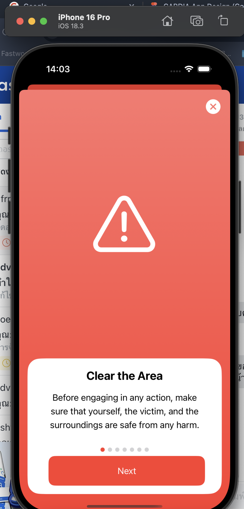
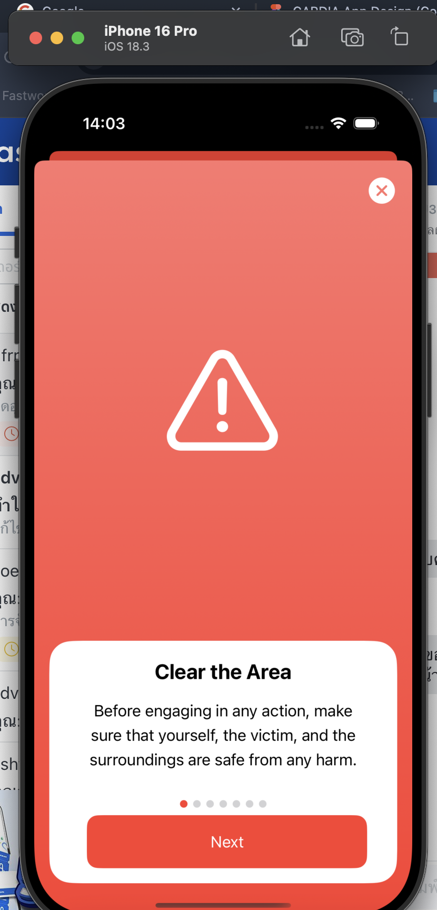

About me
I'm Ekkaluck (Nate) Doungmusik, Motivated Electronics and IoT Developer with experience in IoT prototyping, embedded systems, and IT support. Strong problem-solving skills and ability to deliver projects that improve efficiency and reduce costs.
Winner of several national and international innovation awards. Looking to apply technical knowledge and creativity in a global work environment.
What I'm doing
-

IoT & Electronics
I develop and prototype IoT systems using Raspberry Pi, NodeMCU, and various microcontrollers.
-
Programming
I am proficient in Python, C, HTML/CSS, and have experience with mobile and web app development.
-
IT Systems
I have experience with printers & RFID-based systems, user access control, and event tech setup.
-
Software Tools
I am skilled in using Visual Studio Code, Microsoft Office, Adobe Photoshop, and KiCad.
 
